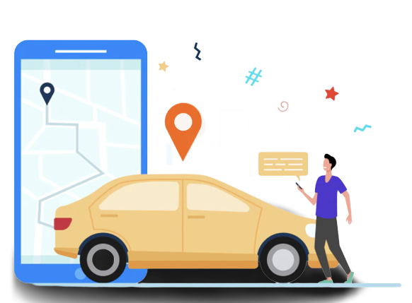

<div class="logo" *ngIf="!isLocation">
  <div class="align-items-center">
    <div class="ion-text-center">
      
      <h1 class="headerFont">Enable Location</h1>
      <p>Enable your location to start find the
        request around you.</p>
        <button class="getStarted" (click)="useLocation()">Use My Location</button>
      <p [routerLink]="['/auth/signup']">Skip For Now</p>
    </div>
  </div>
</div>


<div  *ngIf="isLocation">
  <ion-header>
    <ion-toolbar>
      <ion-buttons slot="start">
        <ion-back-button defaultHref="/auth/location"></ion-back-button>
      </ion-buttons>
      <ion-title>Your current location</ion-title>
    </ion-toolbar>
  </ion-header>

  <div id="map" style="height: 80%;width:100%;margin-top: 4px;"></div>

  <ion-footer [translucent]="true">
    <ion-toolbar>
      <ion-title>Get Started</ion-title>
    </ion-toolbar>
  </ion-footer>

</div>
